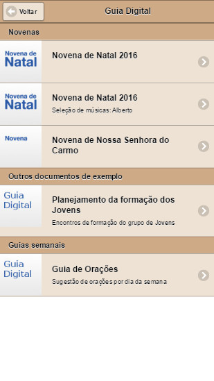
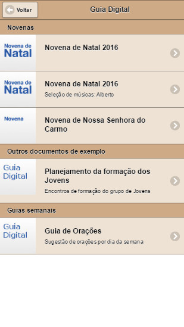
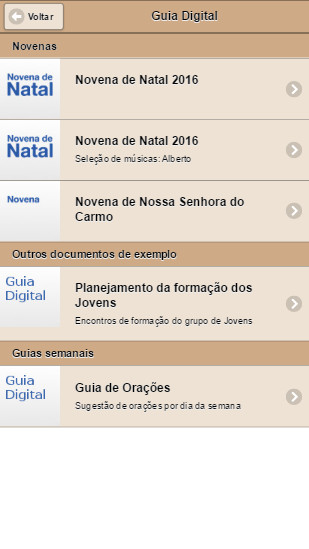
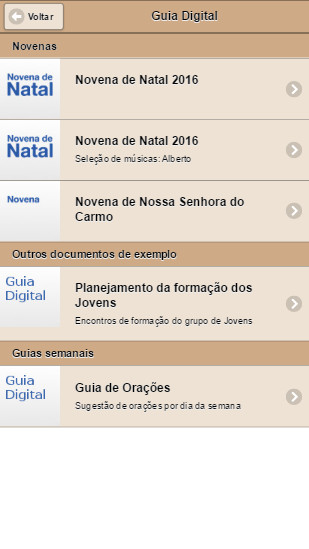

 



A idéia desse aplicativo surgiu de observações que fiz ao frequentar uma paróquia aqui perto de casa.
A primeira foi em relação a quantidade de papeis que circulam dentro da igreja para divulgação, acompanhamento de missa e etc.
Quando eu estava procurando informações dos grupos que atuam na paróquia, percebi também que era trabalhoso saber a quantidade de grupos e também quando ocorrem as reuniões.
Com essas observações em mente, eu pensei: por que não fazer um aplicativo para ter toda essa informação?
Então foi o que fiz.
Ao invés de dar o aplicativo pronto, foi criado um conjunto de ferramentas que permitem a qualquer pessoa criar o seu próprio aplicativo android.
As ferramentas auxiliam desde a criação do ícone do aplicativo até a atualização de conteúdo depois que ele já está publicado na loja.
Para facilitar esse processo de criação e configuração do aplicativo, foi criado um conjunto de vídeos que explicam passo a passo a arquitetura proposta, quais ferramentas utilizar, e quais páginas devem ser configuradas.
O aplicativo possui quatro partes:
Esse aplicativo foi pensado para funcionar também com ou sem internet.
Quando a internet está disponível, ele atualiza as informações internas.
Quando o smartphone estiver em uma região sem internet, ele permite acessar todas as informações que já vieram das atualizações passadas.
Para maiores detalhes, veja o vídeo que fala sobre a arquitetura do aplicativo.
No inicio eu pensei em criar um aplicativo android, por causa do funcionamento da loja android. Nela você paga uma vez a taxa de inscrição, e depois disso, pode publicar quantos aplicativos quiser na google play.
Essa versão do aplicativo não tem suporte ao iPhone e iPad, porque a loja da Apple pede uma inscrição de aproximadamente 200 dolares anuais para que você possa desenvolver e publicar aplicativos. Não foi desenvolvido para essa plataforma por questões financeiras.
A arquitetura do aplicativo foi pensada para funcionar também baseada em plugins.
Plugins são formas de estender a funcionalidade do aplicativo sem precisar criar um aplicativo novo.
Exemplo: Imagina que o aplicativo já tem a funcionalidade de mostrar as notícias cadastradas. Agora é necessário adicionar uma nova informação com a liturgia diária. Para isso, ou se criaria um aplicativo novo, ou utilizando o mesmo aplicativo, através de um plugin, se acrescentaria a funcionalidade de leitura da liturgia diária.
Essa versão do aplicativo já vem com dois plugins que podem ser utilizados em conjunto com o aplicativo.
O primeiro é o plugin de guia digital. Esse plugin permite a criação de documentos em formato de novenas, ou documentos baseados em etapas ou dias. E possível distribuir esses documentos para os celulares das pessoas por esse plugin. Pode ser útil para divulgar novenas, devocionários, guias de orações, etc...
O segundo é o plugin de repertórios. Esse plugin permite a criação de repertórios de músicas com ou sem cifra. Quando um repertório é instalado no aplicativo, a pessoa pode acessar qualquer música, ou imprimir um caderno em formato PDF desse repertório. Pode ser útil tanto para músicos, para cantores e também para pessoas acompanharem uma sequência de músicas durante a missa.
GitHub é uma plataforma de armazenamento de arquivos com controle de versão online.
Ela foi utilizada, porque é robusta, e facilita a distribuição das ferramentas
Tem um vídeo que mostro como faz para obter as ferramentas (o projeto) a partir dessa ferramenta
O link do projeto é: https://github.com/A-Ribeiro/smartphone-parish-app
Os vídeos abaixo foram criados, para explicar passo a passo como utilizar as ferramentas, desde baixar o projeto, configurar ícones, criar aplicativo para a loja, até a instalação e configuração de plugins.
Lista de vídeos: